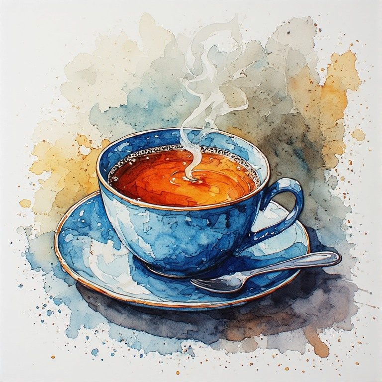
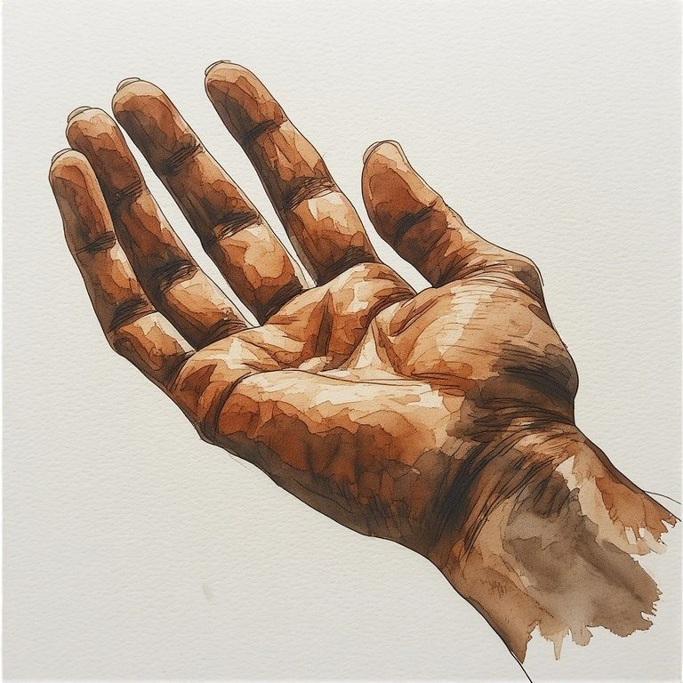
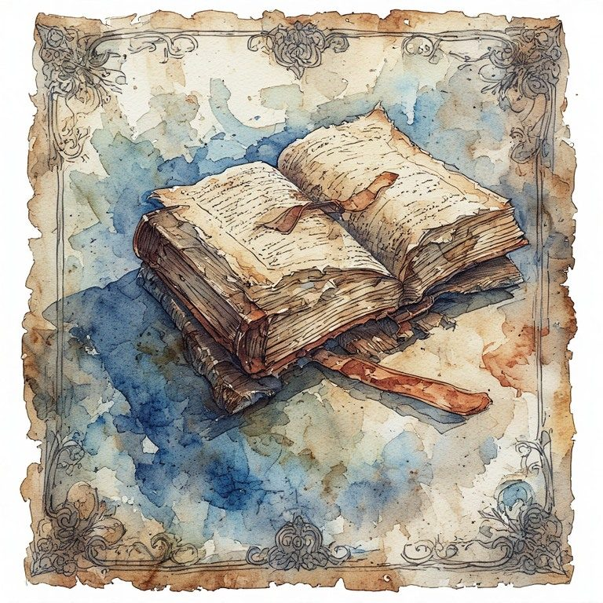
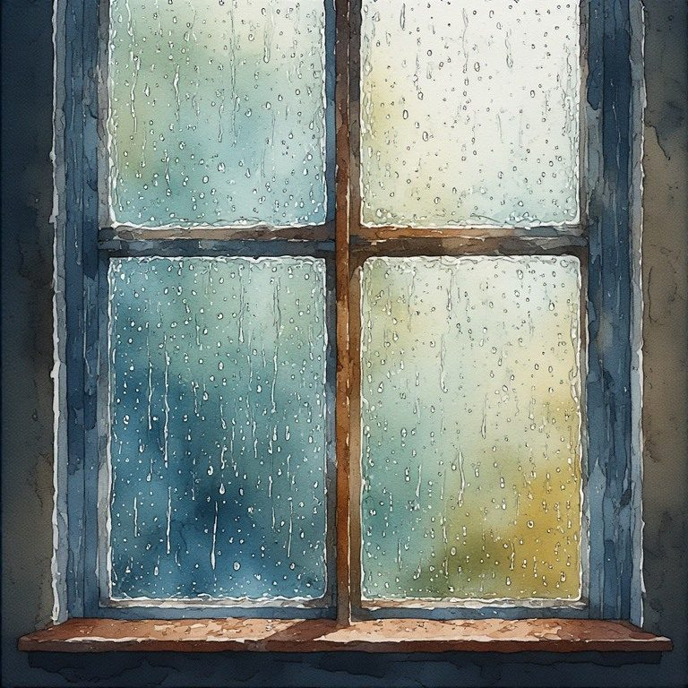

Part Four: Short Meditations
← Part Three: The Monday Mirror · Radical Immanence Collection · Part Five: Daily Teachings →
These short pieces are not instructions. They are invitations to stay with something ordinary a little longer than usual. Read one when you need to come back. When the week has pulled you somewhere else. When you have forgotten where your life actually is.

Cup of Tea
1. It is warm and you are holding it. That is enough for right now.
2. You made yourself something warm today. That is a form of care. It counts.
3. The tea is going cold while you think about everything else. Come back. It is still here. So are you.
4. There is no version of this moment that is more real than the one where you are just sitting with a cup of tea and not yet knowing what comes next.
5. This is not a metaphor. It is just tea. And you are just here. And sometimes that is the whole thing.
6. You did not fix anything today. You made tea. You sat down. You let something warm into your hands. That is not nothing.
7. The steam is already gone. The warmth is still there. Things change slowly and then all at once and then you are just holding what remains. Drink it while it is warm.
8. Some mornings the most honest thing is a cup of something hot and nowhere particular to be with it. This is one of those mornings. Stay a little longer.
9. It is ordinary. So are you, in the best way. Ordinary and here and enough.
10. You did not have to earn this cup. You did not have to be further along, or more resolved, or less tired. You just had to be here. You are.
Where are you right now, holding this?
Here Is Enough.

Open Hand
1. This is what it looks like to not be holding anything. It is harder than it sounds.
2. An open hand is not empty. It is available. There is a difference.
3. You have held so much. Put things down. Picked them back up. Let some of them go without meaning to. Your hand remembers all of it. It is still open. That means something.
4. Not reaching. Not gripping. Just here.
5. The lines on your hand are not a map to somewhere better. They are just the record of a life being lived in this particular body. That is already a lot.
6. Open does not mean fixed. It means willing. And some days willing is everything you have, and that is enough.
7. You have been clenched for a long time. You know that. The opening does not have to be permanent. It can just be right now.
8. There is grief in an open hand too. The shape of what you let go. The weight that is no longer there. Both things are true. The hand is open anyway.
9. No destination. No arrival. Just a hand, in this light, on this day, belonging to someone who is still here.
10. This is enough. You are enough. Your open hand, exactly as it is, is enough.
What are you holding right now that you have not yet acknowledged?
Here Is Enough.

Worn Book
1. Someone read this until it softened. Maybe that someone was you.
2. The cracked spine means it was opened. Again and again, it was opened. You keep returning to the things that matter to you. That is not obsession. That is fidelity.
3. Worn things are not broken. They are used. There is a difference worth sitting with.
4. You have read this in different seasons of your life and it has meant different things each time. That is not the book changing. That is you, still moving, still here.
5. The dog-eared pages mark where you needed to stop. Where something landed. Where you were, exactly, on a day you may not fully remember now. The book held it for you.
6. It is just a book. And it got you through something. Both things are true.
7. You do not have to finish it. You do not have to have understood it. You just had to be the kind of person who picked it up. You were. You are.
8. Worn at the edges. Still whole. Still worth returning to. That could be the book. It could also be you.
9. Some things age into themselves. Get truer with use. Get softer in the right places. This book. Maybe you too.
10. It does not have the answers. It never did. But it sat with the questions alongside you, and that is its own kind of company.
What is the worn thing in your life right now?
Here Is Enough.

Rain on a Window
1. You are inside. The rain is outside. Right now, that is the whole world.
2. The rain does not care what you have not done. It is just falling. You can just watch it for a moment.
3. There is something in you that slows down when it rains. Not everything that slows you down is wrong. Some of it is just your body knowing what it needs.
4. It will stop. It always stops. But right now it is doing what it does and you are watching it and that small act of attention is not wasted time. It is the time.
5. The window holds the rain and shows you the world at the same time. You can be in here and aware of out there, both at once. Most days that is exactly where you are.
6. Grief sounds like this sometimes. Not dramatic. Just a steady sound against the glass while you sit with your own thoughts and do not quite know where to put them.
7. You cannot go anywhere right now. The rain said so. Rest is not always chosen. Sometimes it is just what the weather gives you. Take it.
8. Each drop finds its own way down. None of them take the same path. All of them arrive. You are also finding your way. You are also arriving.
9. It is grey and slow and a little beautiful and not what you planned and still, somehow, enough.
10. You pressed your hand to cold glass when you were small and watched the rain. Some part of you is still that person. Still here. Still watching. Still wondering what it all means, and staying anyway.
What is the weather of this moment for you?
Here Is Enough.